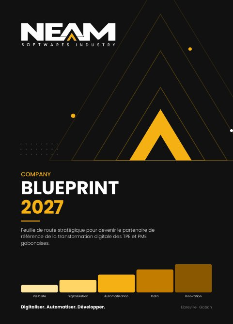

Stratégie · 16 pages · PDF 253 Ko
Company Blueprint 2027
Notre feuille de route pour devenir le partenaire de référence de la transformation digitale des TPE et PME gabonaises. Vision, positionnement, offres, méthode et ambitions, en 16 pages.